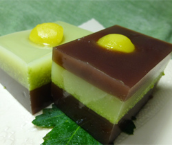

ずんだと小豆の栗羊羹
- 調理時間：40 分
- （一人当たり）
- カロリー：122kcal
- たんぱく質：3.9g
- 脂質：1.5g
- 炭水化物：23.6g
- 塩分：0.3g


＜15㎝×15㎝型 1枚分＞
- ・寒天
- 3g
- ・水
- 250g
- ・砂糖
- 40g
- ・小豆餡
- 200g
- ・食塩
- ひとつまみ
A 小豆羊羹
- ・寒天
- 3g
- ・水
- 250g
- ・砂糖
- 20g
- ・茹で枝豆（正味）
- 200g
- ・食塩
- 小さじ1/2
- 栗（ゆで）
- 適量
B ずんだ羊羹


- 鍋に寒天と水を入れ、強火にかける。寒天が完全にとけたら砂糖を加えて溶かす。
- 小豆餡を加えて、ゆっくりとかき混ぜ、途中アクがでたら取り除く。
- 少しとろみがつく程度まで煮詰めたら、食塩を加えザルでこす。
- 型に流し込み、冷やし固める。
- 茹で枝豆を鞘からだし、薄皮も取り除き、すり鉢で滑らかになるまでする。
- 鍋に寒天と水を入れ、強火にかける。寒天が完全にとけたら砂糖を加えて溶かす。
- ずんだ餡を加えて、ゆっくりとかき混ぜ、途中アクがでたら取り除く。
少しとろみがつく程度まで煮詰める。 - 冷やし固めた小豆羊羹の型に流し込み、冷やし固める。8割がた固まったら茹でた栗をきれいに飾り入れ、2層がしっかり固まれば完成。
A 小豆羊羹
B ずんだ羊羹
ずんだと小豆の栗羊羹
天高く馬肥ゆる秋。実りの秋！いろいろな食材がおいしくなり、食欲も増す季節です。食べ過ぎてしまうこの時期にヘルシーなおやつのご提案。
おやつ（御八つ）とは八つ時のことで14時から16時ごろを指しています。むかし、農民が仕事の休憩を八つ時にとり、体力を落とさないように軽い食事をしたことが語源となっています。ですから、おやつは15時にも食事が必要な成人に、または成長過程で幼児がとる補食、が本来の意味になります。
今回のメイン食材は小豆と枝豆。同じ豆でも小豆は炭水化物が主原料で利尿効果抜群。枝豆は大豆が未成熟に収穫したものでたんぱく質が豊富。寒天を加え、食物繊維が豊富なこの羊羹。体重増が心配な季節にも安心なデザートです。